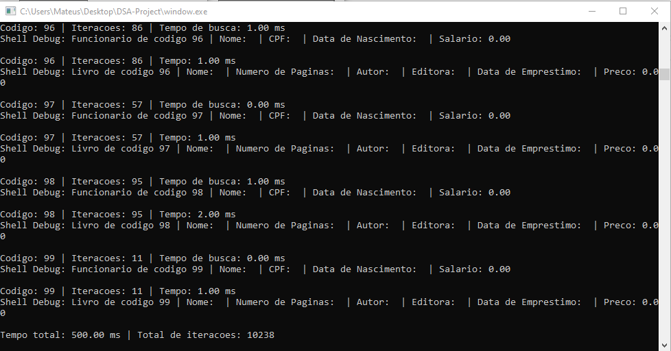
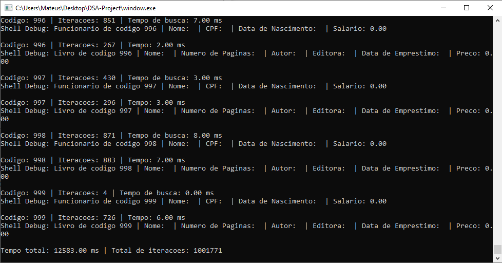
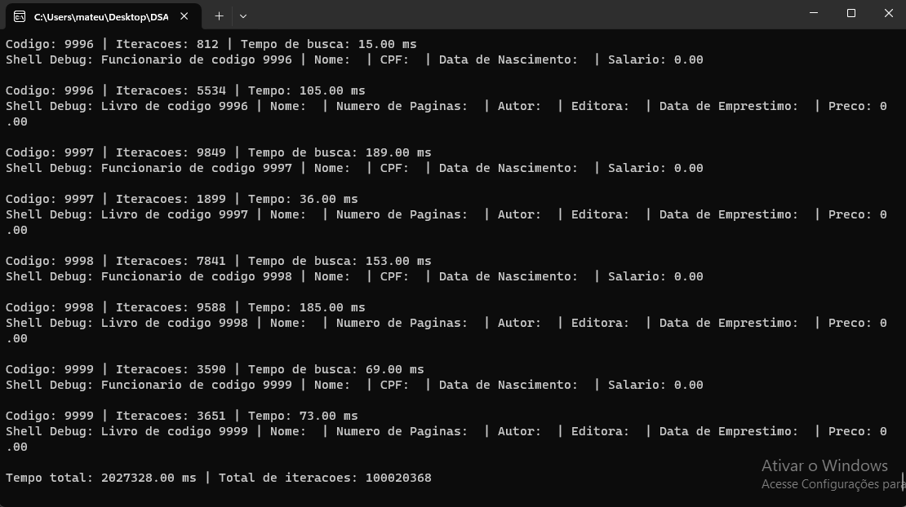
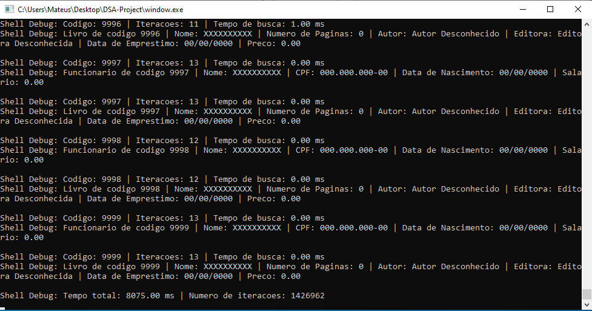

Este relatório tem como objetivo analisar e comparar os resultados obtidos a partir dos testes realizados nos métodos de busca sequencial e busca binária.
A busca sequencial é um método simples e direto, onde cada elemento da lista é verificado sequencialmente até que o elemento desejado seja encontrado ou todo o conjunto seja percorrido.
Durante os testes, observamos os seguintes pontos-chave:
| Tamanho | Tempo | Imagem |
|---|---|---|
| 100 | 0,5 seg |  |
| 1000 | 12,583 seg |  |
| 10000 | 33,7 min |  |
A busca binária é um método eficiente aplicável a listas ordenadas, onde o conjunto é dividido pela metade repetidamente até que o elemento desejado seja encontrado.
Durante os testes, observamos as seguintes diferenças:
| Tamanho | Tempo | Imagem |
|---|---|---|
| 100 | 0,507 seg | |
| 1000 | 3,04 seg | |
| 10000 | 8,075 seg |  |
A seguir, apresentamos uma comparação dos tempos de execução entre os métodos de busca sequencial e busca binária:
| Tamanho | Tempo Sequencial | Tempo Binária | Diferença |
|---|---|---|---|
| 100 | 0,5 seg | 0,507 seg | ▲ 0,007 seg mais rápido |
| 1000 | 12,583 seg | 3,04 seg | ▼ 9,543 seg mais lento |
| 10000 | 33,7 min | 8,075 seg | ▼ 33,692 min mais lento |
Com base em nossos testes, observamos que a busca binária demonstra consistentemente um desempenho superior em relação à busca sequencial. No entanto, é crucial notar que a busca binária exige que a lista esteja ordenada, enquanto a busca sequencial oferece uma opção viável para conjuntos de dados não ordenados. Em resumo, a escolha entre esses métodos depende da natureza do conjunto de dados em questão: a busca binária destaca-se em eficiência quando a ordenação é possível, enquanto a busca sequencial é a escolha prática para listas não ordenadas ou quando a ordenação não é uma opção viável.